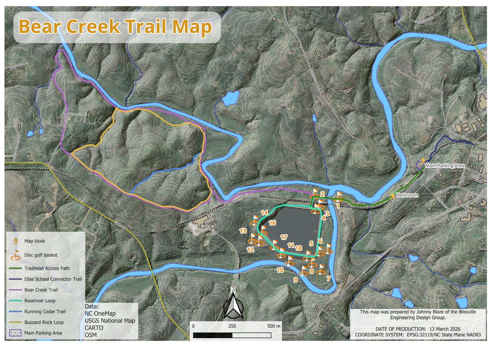
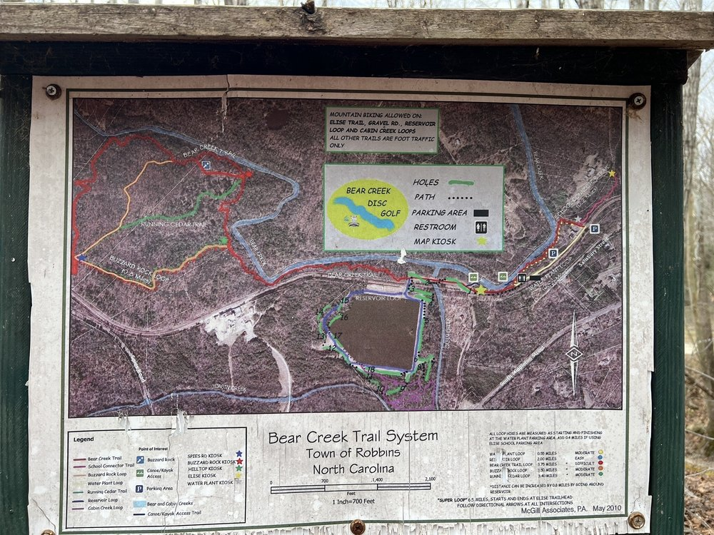

Precision Mapping Products, Regional Spatial Data, and Energy Resilience Resources for Moore County and the NC Sandhills.
Place. Power. People.
Moore County is rich in land, community, and natural resources. We apply professional-grade geospatial analysis and energy expertise to problems that matter at the local scale — trails, land stewardship, solar resilience, and open data.
Trail maps, park maps, and land use analysis for Moore County communities, nonprofits, and local government. Products range from trailhead kiosk prints to spatially accurate GIS datasets in NC State Plane NAD83.
View mapping projects →Education and guidance on solar, off-grid power, and community energy planning for rural Moore County. We map energy infrastructure vulnerability and help residents understand their options — no product to sell.
Energy resources →Publicly licensed vector and raster datasets covering Moore County land cover, hydrology, recreation infrastructure, and renewable energy siting potential. Built on open-source tools, hosted without restriction.
Browse open data →35.4334°N 79.6050°W · Bear Creek Trail System · Robbins, NC · Moore County · EPSG:32119 NC State Plane NAD83
The Bear Creek Trail System operated without an updated map since a local engineering firm produced the original trailhead kiosk in 2010. That map served trailhead visitors well but lacked machine-readable data, a GIS dataset, and current trail use designations. Moore Energy & Mapping delivered a full cartographic rebuild: print PDF, attributed GeoPackage, and a terrain-draped KMZ superoverlay, all authored in NC State Plane NAD83.


The KMZ superoverlay is a multi-zoom tile pyramid — 329 georeferenced map tiles spanning zoom levels 13 through 17 — that loads in Google Earth and lays the full Bear Creek trail map across the actual 3D terrain model. Trails follow creek corridors. Disc golf holes sit on their real ground positions. The contour data from the original USGS DEM aligns with Google's elevation surface beneath it.
At zoom level 17 — the finest detail available for this area — individual trail segments, basket locations, and parking areas resolve cleanly against the hillshade landscape. This level of deliverable is uncommon for a community trail system at this scale.
All Moore Energy & Mapping spatial products are released under open licenses. Vector data ships as GeoPackage in EPSG:32119. Raster products distribute as GeoTIFF and KMZ. No account required, no embargo period.
24"×36" cartographic layout at 300 DPI with full legend, north arrow, scale bar, disc golf inset, and full data source citations. Suitable for professional print production or digital distribution.
Download PDF329-tile pyramid across zoom levels 13–17. Drapes the full trail map on Google Earth's 3D terrain model. Open in Google Earth Pro for the most immersive view of the trail system in landscape context.
Download KMZFour attributed vector layers: trails (name, surface, permitted use, length in miles), amenity points, reservoir water body polygon, and system boundary. Compatible with QGIS, ArcGIS Pro, and any OGR tool.
Download GPKGStandalone SVG reference diagram with color-coded trail routes, disc golf basket locations, waterways, and MTB use designations. No install required — opens in any browser, works offline.
Open SchematicThe Bear Creek Disc Golf Course wraps around the central reservoir — an 18-hole layout documented with basket locations, distances, tee type (S/L/X), and par. All hole positions are captured in the GeoPackage amenity layer. Par 4 holes shown in bronze.
"We do the work. The data is yours."Moore County Mapping and Energy Alliance · d/b/a Moore Energy & Mapping